Projects
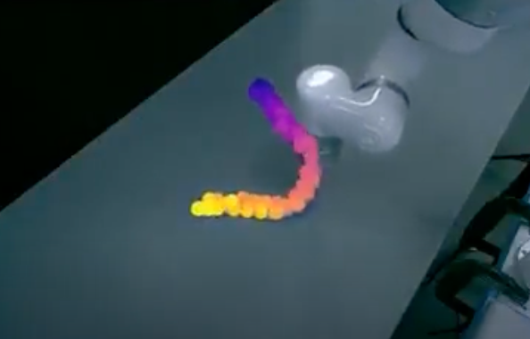
Real-time Non-Rigid Body Tracking and Manipulation
A novel approach to tracking and manipulating deformable objects, like ropes. Rather than Gaussian splatting, a computationally expensive method, I use point clouds, which are extremely fast and enable real-time state estimation of non-rigid bodies. I apply the non-rigid point set registration technique to keep the object's points consistent across all frames. I successfully trained a graph neural network to model the rope’s dynamics.
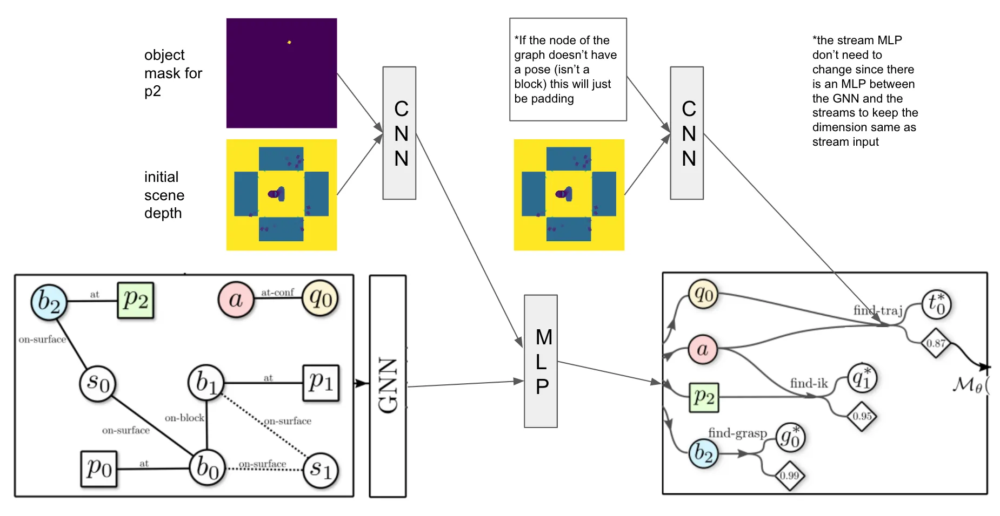
Task and Motion Planning with Object Relevance
A novel machine learning architecture, encoding visual data with a convolutional neural network and scene graph information with a graph neural network. This system predicts object relevance scores to help direct the search process in task and motion planners (specifically a PDDLStream variant).
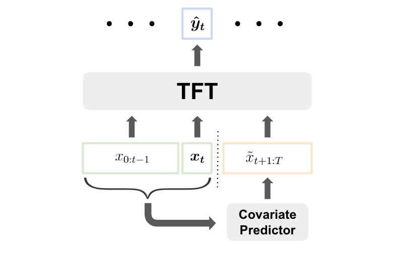
Enhancing Time Series Prediction Through Short-Term Covariate Forecasting
A framework that is able to first forecast covariates into the near future and then use those predictions along with past known covariates to estimate the current target variable.
Electrically-Triggered Jetting of mRNA Vaccine Into Internal Tissue
Designed and created a novel ingestible robot capable of delivering mRNA vaccines directly into the stomach tissue, thus alleviating the need for an injection.
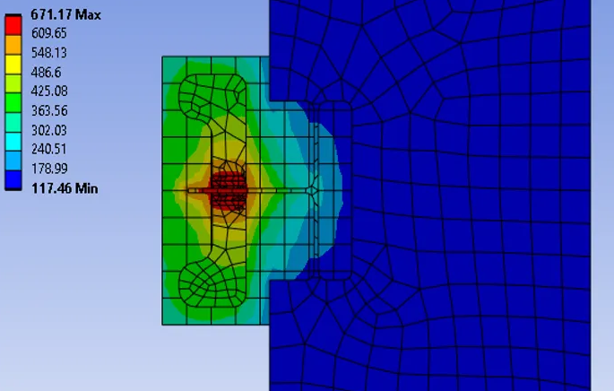
Ultra-Low Power Microheater
Developed a novel ultra low power method to ignite a reactive metallic nanofilm on demand using a custom micro-heater array.
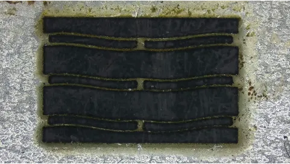
Mesoscale Single-Cut Bistable Mechanism
Created the first mesoscale (1-500 um) bistable mechanism that can be cut in a single laser cutting operation out of Nickle chromium alloy. Can be used in a variety of applications, such as drug delivery, micro-robotics, and MEMS.
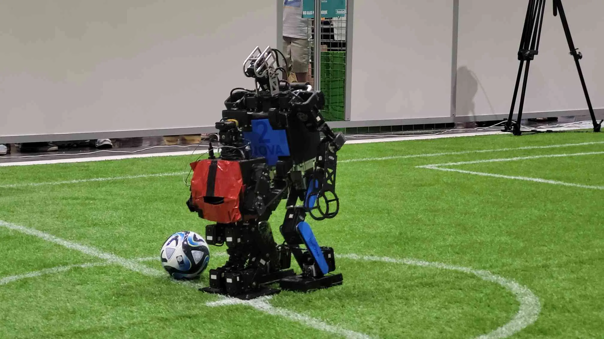
RoboSoccer
Designed a multi-agent control algorithm using decision trees for a team of 4 humanoid robots playing soccer for the RoboCup 2022 in Thailand.
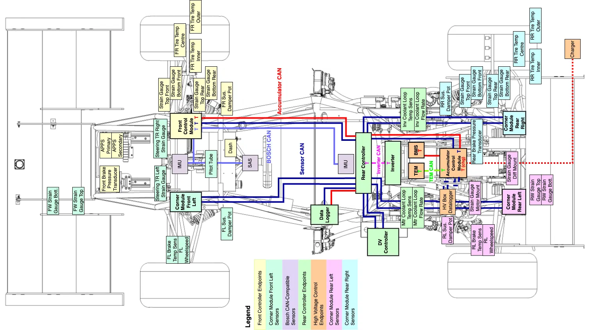
University of Toronto Formula Racing Team
Created the wiring harness for the car and designed a cell-level fusing system for a custom 600V Li-ion battery pack made with 18650 cells.
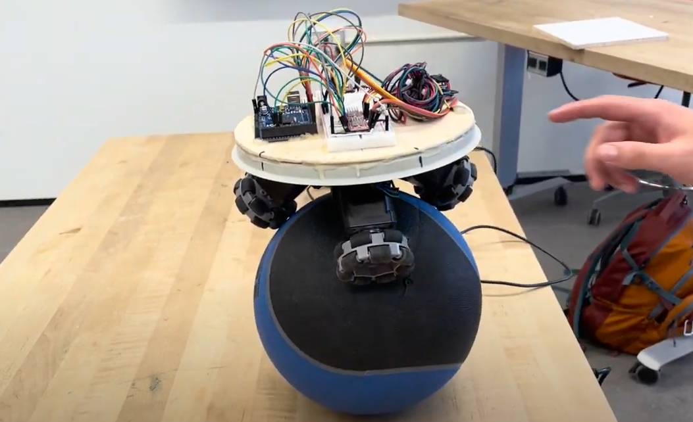
Ball Balancing Robot
Created a robot that balances on a ball by using the digital signal processor on the IMU for fast closed loop control with a dynamics model and a custom stepper motor controll library.
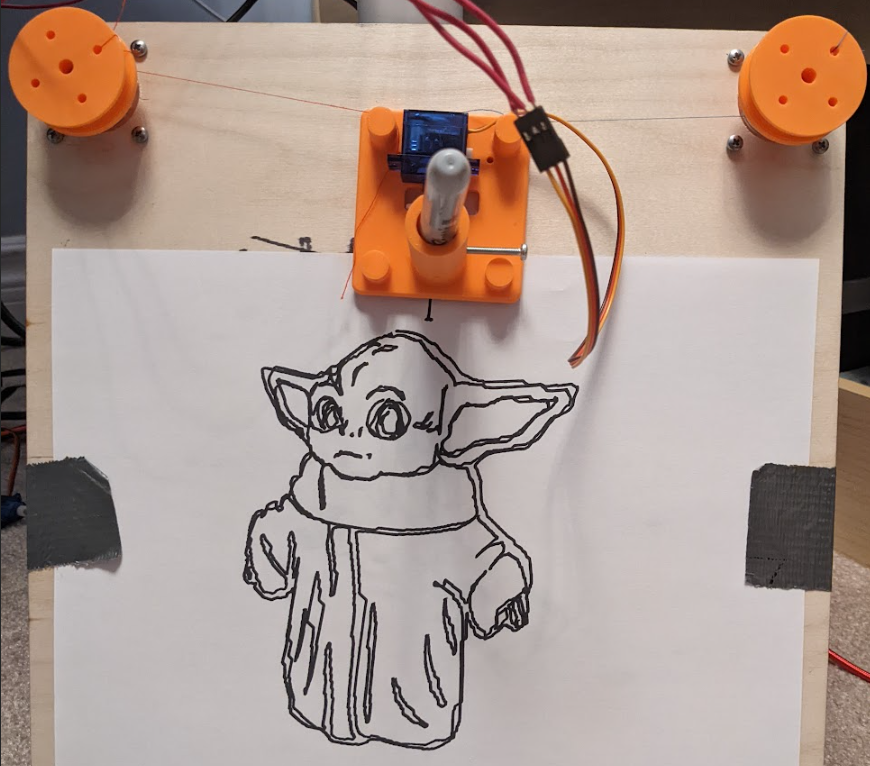
Actuating Plotter
Built and programmed a plotter for under $15 capable of taking any PNG image and converting it to a series of line segments that can be drawn by two stepper motors.
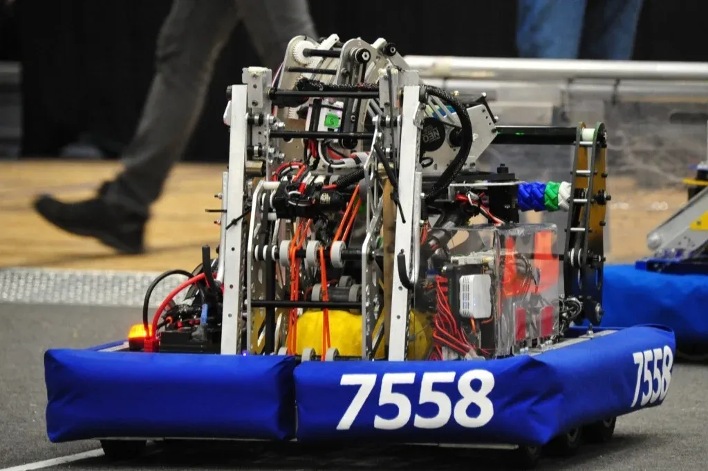
FIRST Robotics Competition Mentor
I started my high school's FRC team in grade 11. I've since continued as a mentor teaching modern robotics methods and tools to high school students for the FIRST Robotics Competition. Currently using Nvidia Isaac Sim with ROS2 to develop and test a highly optimized C++ library using multiple cameras and AprilTag targets for fast and precise localization with an extended kalman filter and factor graphs.
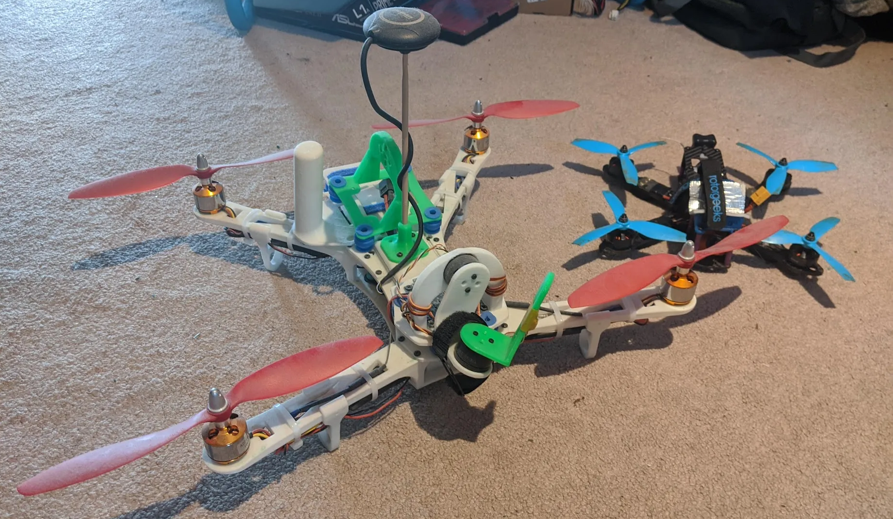
Drones
In the 8th grade I designed, 3D printed, and programmed on an Arduino multiple drones with custom gimbals and GPS navigation. Fly FPV drones recreationally.